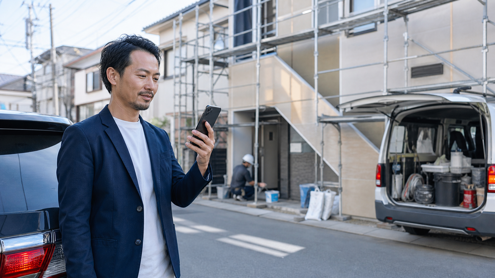
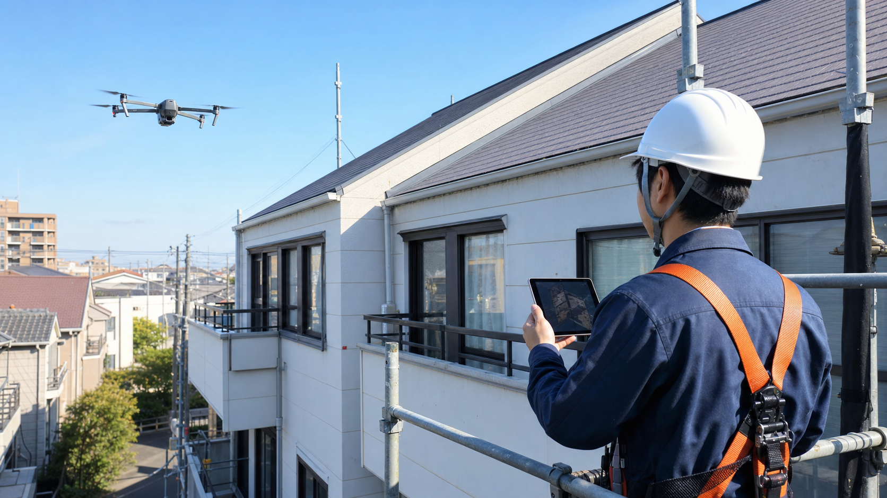
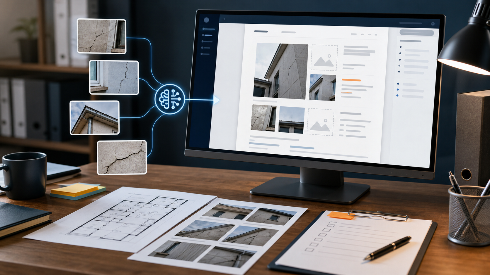

匿名改善ケース / 建築・点検・現場型
現場に出ている間に、AI事務員が報告書と連絡文を進める
現場確認、移動、電話対応でPCを開けない時間。その裏側でAIがメール、社内チャット、写真、予定を整理し、報告書のたたき台まで作る流れをまとめました。

先に結論
この事例の本質は、現場中の時間を「止まる時間」から「進む時間」に変えたことです。
現場型の会社では、社長や責任者が外に出るほど、事務処理が後ろへ倒れます。朝8時に現場へ出て、10時に写真を撮り、昼に協力会社から確認が入り、15時に別案件のメールが来る。全部大事なのに、本人がPCを開けないため、夕方まで仕事が止まります。
改善後は、現場で撮った写真が案件フォルダに入り、AIが「報告書に使う順番」「顧客へ伝えるべき要点」「協力会社へ送る確認文」を下書きします。帰社後に始まるのは作成ではなく確認です。
入口はスマホ
移動中や休憩中に、音声や短い文章でAIへ作業を渡します。
材料は写真と連絡
現場写真、メール、社内チャット、予定をAIが使える場所へ集めます。
最後は人が確認
劣化判断、見積、外部送信は人が見ます。AIは下書きと整理までです。
改善後の実感
一番変わるのは、夕方の気持ちです。
以前は、現場から戻った瞬間に「ここから報告書か」と重くなっていました。改善後は、AIが作った下書きを開き、写真の順番と表現を直し、危険箇所や金額だけ自分で判断します。
1案件45〜60分
写真探し、文章作成、メール確認を帰社後にまとめて処理していました。
確認15〜20分へ
下書きと写真の並びがあるため、人は事実確認と判断に集中できます。
連絡が早くなる
協力会社への確認文や顧客への一次報告が、当日中に出しやすくなります。
ある日のナラティブ
15時42分、車の中で「今日も報告書が残るな」と思った瞬間。
現場責任者は、午前中に外壁の点検写真を38枚撮りました。昼前には協力会社から「足場の日程を先に知りたい」と連絡が入り、午後の移動中には別案件の顧客から「雨漏りの写真を見てほしい」とメールが届きます。
以前なら、全部を頭の片隅に置いたまま夕方まで走り、事務所に戻ってから写真を開き、メールを探し、報告書を作り始めていました。疲れた状態で作るので、文章は硬くなり、必要な写真を入れ忘れないか不安が残ります。
改善後は、現場を出る前にスマホから「この案件の写真で報告書下書き、協力会社への日程確認文、顧客への一次報告を作って」と渡します。AIは写真を用途別に並べ、メールと予定を見て、送信前の下書きまで用意します。
17時18分。事務所に戻って開いた画面には、写真の順番、指摘箇所の説明、協力会社への確認文がすでに並んでいます。責任者がやるのは、劣化判断と表現の確認です。「今日はこれなら、19時前に帰れる」。ここで初めて、AI活用が便利さではなく安心に変わります。

導入前
夕方から、もう一度仕事が始まっていました。
現場から戻った後に、写真を探し、メールを読み返し、チャットの依頼を確認し、報告書を作る。小さな作業が積み上がり、社長や現場責任者の夜を削っていました。
屋根、外壁、周辺、指摘箇所など、後で並べ直す必要がありました。
協力会社、顧客、社内からの依頼が散らばり、対応漏れの不安が残ります。
報告書、案内文、注意喚起、依頼文を毎回ゼロから書いていました。
1日の流れ
AIは「空き時間」ではなく「手が離せない時間」に働いています。
案件フォルダ、写真置き場、メールの条件、社内チャットの確認範囲を決めます。
重要な依頼、今日返すべき連絡、現場で確認する項目を短くまとめます。
危険箇所、劣化箇所、周辺状況など、現場でしか分からない材料を残します。
AIが写真の用途を推定し、報告書の順番や見出し案を作ります。
現場名、注意点、希望日、確認事項を含めた連絡文を準備します。
判断、金額、表現、送信先を人が見て、必要箇所だけ直します。
なるほどポイント
うまく見える理由は、AIに渡す作業が具体的だからです。

写真を撮るだけで終わらせない
撮影した写真を、案件名、場所、用途と結びつけるところまでを仕組みにします。

連絡を読む時間を圧縮する
AIが「読むべきもの」と「後でよいもの」を分けるだけでも、朝と夕方の負担が変わります。

完成品ではなく、確認しやすい下書きを作る
AIに完璧な報告書を求めず、人が直しやすい順番と文章にするのが現実的です。
人とAIの分担
任せる仕事と、任せてはいけない判断を分けます。
AIに渡しやすい作業
- メール・社内チャットの要約
- 現場写真の分類と報告書の骨子
- 協力会社への依頼文の下書き
- 顧客向け案内文のたたき台
- 当日確認すべき項目のチェックリスト化
人が見るべき判断
- 劣化状況や危険度の判断
- 見積金額、契約条件、工事範囲
- 外部への最終送信
- クレームや事故につながる表現
- 個人情報や現場写真の取り扱い
真似する順番
まず「現場後に必ず残る1作業」だけ選びます。
写真整理、報告書、連絡文、メール確認のどれが一番重いかを見ます。
案件フォルダ、写真フォルダ、メール条件、チャット範囲を固定します。
報告書、チェックリスト、返信案など、確認しやすい形式にします。
金額、契約、外部送信、安全判断は必ず人が見るルールにします。
自社に置き換える
御社なら、現場後に残るどの作業をAIへ渡せるか。
写真整理、報告書、メール確認、協力会社連絡など、まず1業務から現実的な導入範囲を整理します。
30分無料診断を申し込む